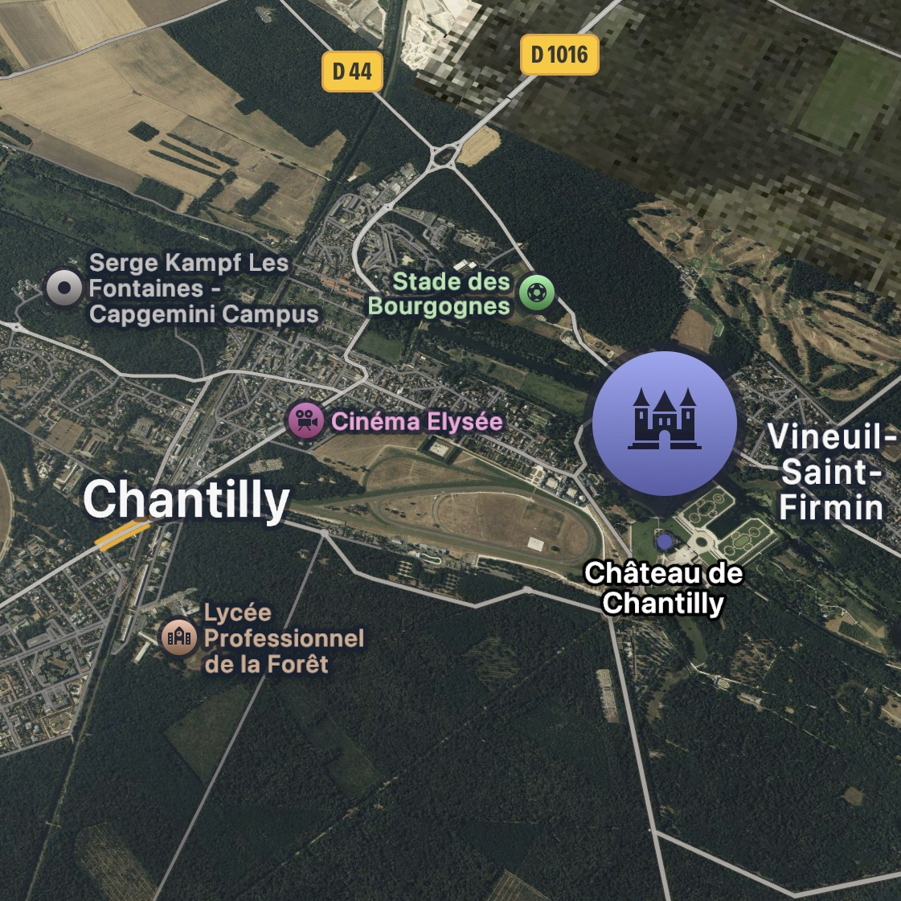

Présentation
Le Château de Chantilly est l’un des plus beaux joyaux du patrimoine français, célèbre pour
son architecture raffinée, ses jardins à la française et sa prestigieuse collection d’art.
Élue Monument préféré des Français en 2025.
Localisation
- Situé dans l’Oise, au cœur d’un vaste domaine forestier
- À 25 min en train de Paris (Gare du Nord → Chantilly-Gouvieux)
- À proximité de l’aéroport Charles-de-Gaulle
- Domaine de 7 800 hectares (forêts, jardins, étangs)

Accès
- Train : TER / RER D
- Voiture : A1 (sorties 7 et 8)
- Bus / navettes locales
- Bonne accessibilité PMR (certaines zones limitées)
Notoriété & Histoire
Notoriété :
- Musée Condé : 2e collection de peinture ancienne après le Louvre
- Jardins d’André Le Nôtre
- Grandes Écuries parmi les plus grandes d’Europe
- Parc, musées, nature, spectacles équestres
Histoire :
- Origine médiévale, reconstruit au XIXᵉ siècle
- Transformé par de grandes familles nobles
- Légué à l’Institut de France en 1886
Visites
Entre 450 000 et 500 000 visiteurs/an.
Beauté du site
- Architecture élégante
- Salles historiques et décorations raffinées
- Jardins à la française, forêts et plans d’eau
- Ambiance unique mêlant art, nature et histoire